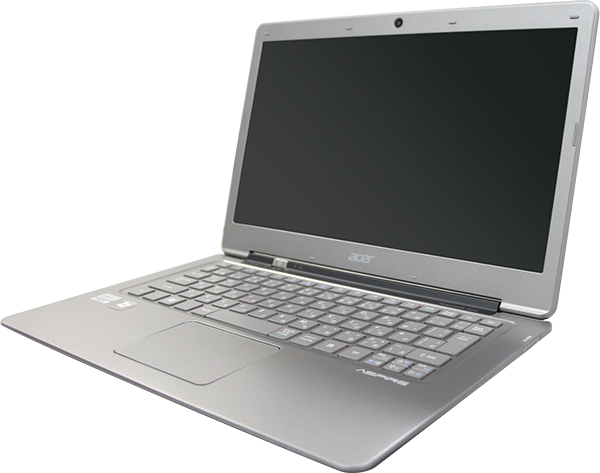

サイバーセキュリティ科
Cyber Security
昼間：2年 定員：20名
ネットワークとセキュリティのプロフェッショナルを目指す！
サイバーとは、「コンピュータやネットワークに関すること」を指します。コンピュータネットワークはここ数年で技術や運営方針が大きく変わり、仮想化技術やクラウドの技術が仕事だけではなく、皆さんの生活を支えています。「先端の知識を学び、現場で使える技術を学ぶ」それがサイバーセキュリティ科です。
将来の職業
- セキュリティエンジニア
- ネットワークエンジニア
- サイバーエンジニア
- カスタマーエンジニア
- インフラエンジニア
こんな人にオススメ！
- ホワイトハッカーになりたい
- 機械いじりが好き
- パソコンを自在に使いたい
- 職業に有利な技術が欲しい
- 県内外で働きたい
- 社会を支える仕事がしたい
- 有名企業で働きたい
- 専門的な知識が欲しい
- かっこいいオフィスで働きたいなど
各自へノートPCを配布

入学と同時に各自へノートPCを配布するので、自宅にPCがなくても大丈夫！学校の機材＋自分だけの専用ノートPCで、さらに技術UP!

充実した実習素材に直接ふれることで、より実践に即した授業内容になってます。

インターネットを使って提供されるサービスの基盤となる「クラウド」を支える技術も学びます。
| ITスペシャリスト科 | サイバーセキュリティ科 | ITカレッジ沖縄ホームページ |
|---|---|---|
| ゲームクリエイター科 | 夜間ITエンジニア科 | コース選びに迷ったら |